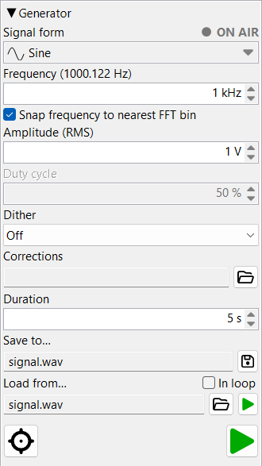

This page covers the generator's controls. For how it synthesizes signals inside — direct digital synthesis, the waveform kernels, sweeps and active distortion compensation — see Theory of operation ▸ Signal generator.
Produces test signals routed to the configured output device. Two engines coexist in this pane and are mutually exclusive: the tone generator (sine / sweep / noise / etc.) and the audio-file player. Starting one stops the other.
Every numeric field here accepts the value four ways: type it in, scroll the mouse wheel, click the ▲/▼ arrows, or — with the field focused — press the keyboard ↑/↓ cursor keys (same step as the arrows).

Drop-down combo with eleven waveforms. Each entry has a small
pictogram showing the waveform shape. Changing the form
reconfigures the surrounding controls — the duty-cycle field
enables for Rectangle and Triangle,
the sweep controls appear for Linear sweep and
Log sweep, the frequency field disables for the
noise variants.
| Form | Notes |
|---|---|
| Sine | Pure tone, DDS-driven. |
| Sine compensated | DDS-corrected so the actual emitted frequency exactly matches the requested value. |
| Triangle | Adjustable duty cycle (asymmetric ramp). |
| Rectangle | Adjustable duty cycle (high-time fraction). |
| White noise | Uniform-random samples. |
| Pink noise | Gaussian source via Voss–McCartney. |
| Pink noise linear | Flat-amplitude white source via Voss–McCartney. |
| Linear sweep | Chirp with linear-in-time frequency ramp. |
| Log sweep | Farina logarithmic chirp — equal energy per octave. |
An LED and the text ON AIR at the top-right of the pane. Whenever either the tone generator OR the audio-file player is driving the output, the LED lights solid red and the ON AIR text blinks. Both go grey when nothing is playing — so the indicator tells you, at a glance, whether the program is currently emitting sound.
The output frequency, for periodic waveforms (disabled for the noise
forms). Accepts Hz and kHz; a number with no
suffix is read as Hz, and the display switches to kHz above 1 kHz.
The label may show a bracketed annotation — e.g.
Frequency (1000.122 Hz) — when the snap-to-FFT-bin
correction or the integer-sample period (for Rectangle)
produces an emitted frequency slightly different from what you typed.
The bracketed value is the actual emitted frequency.
Checkbox. When on, the emitted frequency snaps to the nearest FFT bin for the current FFT-analyser length. Useful for clean spectrum measurements: with snap on, the fundamental sits exactly on a bin and window-leakage doesn't pollute the harmonic estimates.
Active only for Rectangle (high-time fraction) and
Triangle (rise-time fraction), as a percentage. Each
waveform remembers its own value, so switching between Rectangle and
Triangle restores each one's last duty.
For Rectangle only, the duty is adapted to what the DDS
can actually output: its +1/−1 step can land only on a whole
sample, so the finest duty step is one sample per period —
f / fs (output frequency ÷ sample rate). Example:
10 kHz at 384 kHz gives 38.4 samples per period, so the smallest
step is ≈ 1/38.4 ≈ 2.63 %, and a finer typed value snaps
to the nearest achievable step. The label then shows the adapted
duty in brackets — e.g. Duty cycle (2.632 %).
Triangle uses real continuous-phase DDS (its samples ride the
exact ramps, so the corner is sub-sample), so its duty is exact —
no quantisation and no bracket. See
Theory ▸ duty quantisation.
Visible only when Dual tone is selected. The single
frequency field is joined by a second frequency and an
amplitude balance between the two tones (each as a percentage;
a 19 kHz + 20 kHz or 60 Hz + 7 kHz pair are the usual
intermodulation tests). The combined output is re-normalised to the
dialled V RMS whatever the split, so a 50/50 pair is not quieter
than a single tone at the same setting. Both tones can be
snapped to FFT bins
independently, and the FFT analyser measures their intermodulation
products — see Theory ▸ dual
tone and Theory ▸ two-tone.
The intermodulation-corrected counterpart of Dual tone,
the two-tone analogue of Sine compensated. Every
distortion product of a two-tone signal — each tone's harmonics
and their intermodulation products — sits at
a·f1 + b·f2 for integer
a, b, so the generator pre-distorts the
output with an anti-phase correction tone at every such product to
cancel it at the analyser side. The corrections are measured for you
by the closed-loop predistortion wizard — the ★ wand button
beside the FFT analyser's record control — and then applied live.
Selecting this form from the combo without measured corrections loaded
simply emits the plain two tones, exactly as
Sine compensated falls back to a pure sine.
Visible only when Linear sweep or Log sweep
is selected. Replaces the single frequency field with a block of
sweep parameters.

The frequency the chirp begins at (Hz / kHz).
The frequency the chirp ends at (Hz / kHz).
Total chirp length, in seconds.
Seconds. Amplitude ramp at the start of the chirp, suppressing the click an abrupt amplitude step would cause.
Seconds. Same as fade-in but at the chirp's end.
Checkbox. When on, the sweep restarts as soon as it ends, in a continuous loop.
The output level, held internally as volts RMS. Units:
µV, mV, V and dBV
(case-insensitive); a number with no suffix is read as volts. The metric
display auto-rescales (µV / mV / V) so the number stays readable; typing a
dBV value keeps the field in dBV (the auto-rescaling never
switches to dBV on its own).
Note: dBV is referenced to 1 V RMS regardless of
device — x dBV = 10x/20 VRMS.
Read-only drop-down (rebuilt to match the output bit-depth on
open). Selects how many LSBs of triangular dither are added
before quantisation. Off disables dither;
1 .. N add 1 .. N LSBs (N = output bit-depth).
Dither breaks up periodic quantisation patterns at very low
output levels.
Optional predistortion file describing the DAC compensation. A
single-tone file lists each harmonic's complex correction; a dual-tone
file lists the intermodulation products as (a, b)
coefficients. The generator pre-distorts the output so the listed
distortion cancels at the analyser side. Use the open-file button
to pick a .dpd; the read-only field then shows the loaded
path, and the clear button unloads it. These files are produced by
the FFT pane's predistortion wizard (the ★ wand
button beside the record control) — see
Dual tone (compensated) and
Sine compensated.
Seconds. Length of audio to write when using Save to. Independent of the live emission — the file is rendered in one pass using current generator settings.
Read-only path + Save button. Clicking it opens
a save dialog; the chosen file's extension picks the format
(.wav / .flac / .aiff /
.aif). Confirming writes the file immediately, using the
current generator settings and the duration above.
The written file is the ideal, mathematically exact signal — synthesised digitally and free of any DAC, amplifier or cabling distortion. Use it as a reference, or to drive another instrument with a known-clean source. See Theory ▸ saving a signal.
Plays back an existing audio file to the output device. The
open-audio button picks the file — any
WAV / AIFF / FLAC, not only files
this program saved. The In loop checkbox repeats the file on
end-of-file; the toggle is live — flipping it during playback takes effect
at the next loop point.
Small play LED next to the path field. Lit while the file is playing, dim otherwise. Starting file playback stops the tone generator if it was running (and vice versa for the main play button).
Large play button anchored to the bottom-right of the pane. Starts the tone generator with the current form / frequency / amplitude. While running, the icon shows the lit play state and the ON AIR indicator blinks. Pressing it again stops emission. Starting the main player stops the WAV-file player if it was running.